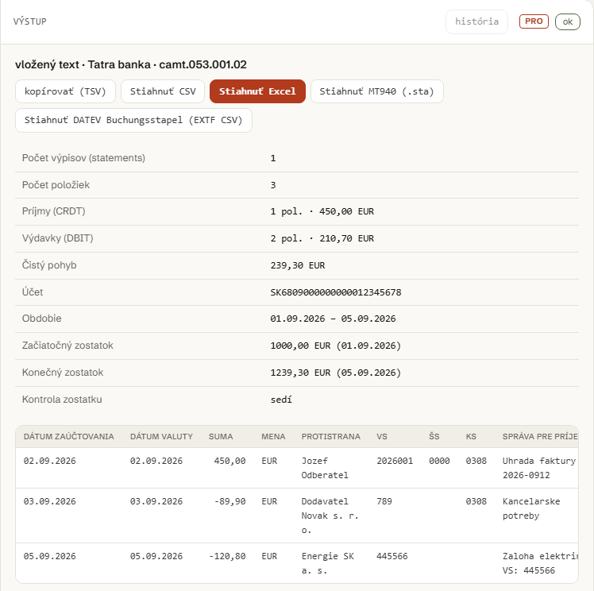
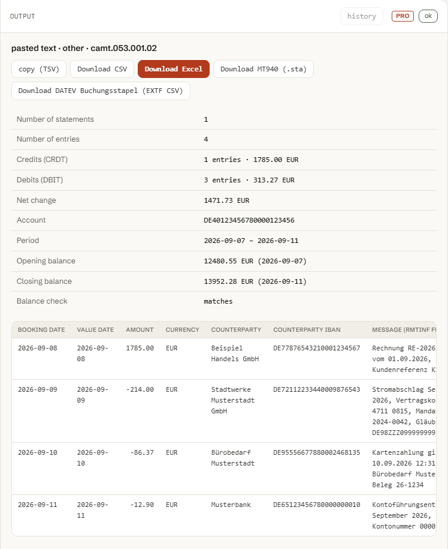
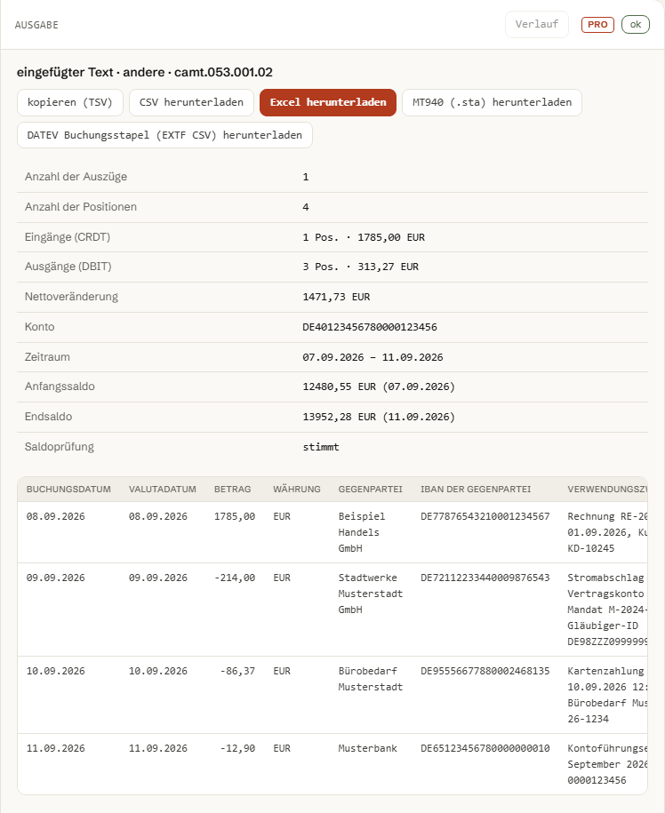

Výpis z banky v XML (camt.053) na tabuľku za sekundu.
Nahrajte alebo vložte výpis, ktorý ste stiahli z internet bankingu Tatra banky, SLSP, VÚB alebo ČSOB, a stiahnite tabuľku CSV alebo Excel s dátumami, sumami, protistranou a variabilným symbolom. Bez odosielania, bez účtu.
Video, 2 minúty (po nemecky): výpis z banky do Excelu
- 4 banky: Tatra banka, SLSP, VÚB, ČSOB
- 2 verzie camt.053: .001.02 a .001.08
- 546 automatizovaných testov
- max. 20 MB
- 0 €, bez účtu, beží vo vašom prehliadači
- Prvý prevod je zadarmo, bez konta.



01
Tri dôvody, prečo účtovník potrebuje tabuľku z výpisu, nie len PDF.
camt.053 XML má všetky dáta, ktoré PDF výpis len vypíše na papier. Problém je, že XML sa nedá otvoriť v Exceli dvojklikom.
-
VS, ŠS a KS nie sú v jednom poli.
Banka ich zapisuje do
EndToEndId, do štruktúrovanej referencie alebo len do textu správy, podľa toho, ako platbu zadal platiteľ. Nástroj skúša všetky tri miesta v tomto poradí, takže párovanie s faktúrou funguje aj vtedy, keď PDF ukáže len jedno dlhé referenčné číslo. -
Znamienko rozhoduje o súčte, nie farba v PDF.
Suma sa do tabuľky zapíše so znamienkom podľa
CdtDbtInd(DBIT záporná, CRDT kladná), takže sa dá priamo sčítať a skontrolovať proti začiatočnému a konečnému zostatku, ktoré výpis sám uvádza. -
Jeden bankový zápis môže byť viac platieb.
Dávkový záznam s viacerými
NtryDtls/TxDtlssa rozpíše na samostatný riadok pre každú platbu, takže párovanie podľa VS funguje na úrovni platby, nie na úrovni bankového zápisu.
02
Nahrajte výpis. Dostanete tabuľku, súhrn aj kontrolu zostatku.
Nič z toho, čo nahráte alebo vložíte, sa neodosiela. Parsovanie aj generovanie CSV/Excelu beží vo vašom prehliadači.
Prišli ste kvôli MT940/DATEV? Nahrajte výpis alebo kliknite na „ukážka“, potom na „Previesť“ a napokon na tlačidlo „MT940“ alebo „DATEV“ pri výsledku nižšie.
nahrajte alebo vložte výpis, stlačte Previesť alebo ⌘↵
03
Dve funkcie. XML dnu, riadky von, hneď skontrolované na zostatok.
Žiadny server, žiadny API kľúč, žiadna registrácia. camt053.js je čistý JavaScript: prečítajte si ho, forknite, alebo ho spustite vo vlastnom kóde či CI.
import { parse, toRows, toCsv, summarize } from './camt053.js'; // alebo globálne: const { parse, toRows, toCsv, summarize } = window.CamtConverter; const parsed = parse(xmlText); // camt.053.001.02 alebo .001.08 const rows = toRows(parsed); // 1 riadok = 1 platba (VS, suma, protistrana...) const csv = toCsv(rows, { delimiter: ';', bom: true }); const summary = summarize(parsed); // OPBD + pohyby =? CLBD // Excel bez knižnice: minimálny .xlsx ako ZIP (STORED), pozri xlsx-writer.js import { buildXlsx } from './xlsx-writer.js';
Parsovanie XML, výpočet súhrnu aj skladanie CSV/Excelu beží presne tak, ako ho volá formulár vyššie, vo vašom prehliadači. Neexistuje backend ani API kľúč, ktorý by obsah vášho výpisu odniesol inam.
Engine používa vlastný tolerantný XML parser (rovnaký prístup ako sesterský nástroj SEPA pain.001 Doctor), nie DOMParser, takže beží nezmenený aj v Node: presne to spúšťa aj testovacia sada tohto projektu, tests.mjs.
Zadarmo, otvorené, bez reklamy a bez sledovania nad rámec anonymných počtov použitia. Prípad, ktorý nástroj spracuje zle, nahláste ako issue na GitHube.
Nástroj nie je prepojený s Tatra bankou, Slovenskou sporiteľňou, VÚB ani ČSOB a nie je banka. Kontrola zostatku upozorní na nezrovnalosť, nezaručuje ale úplnosť výpisu.
04
Pro: MT940 a DATEV Buchungsstapel, viac súborov naraz.
Prevod jedného výpisu na CSV alebo Excel je a zostáva úplne zadarmo, bez limitu. Pro pridá export do MT940 (pre ručný import do DATEV alebo iný starší softvér) a do DATEV Buchungsstapel (EXTF CSV), spracovanie viacerých súborov naraz a históriu konverzií, jednou licenciou spoločnou pre štyri bankové nástroje ARLing.
Prvý prevod je zadarmo, bez konta.
-
MT940 a DATEV Buchungsstapel export.
MT940 vypadlo z pravidiel nemeckého bankového styku v novembri 2025, mnohé banky už výpis posielajú iba ako camt.053. DATEV Kanzlei-Rechnungswesen ale priamy import camt.053 nemá, ručný import súborov stále čaká MT940. Pro k tomu pridá aj export priamo do formátu DATEV Buchungsstapel (EXTF CSV).
-
Viac súborov naraz.
Nahrajte viac výpisov naraz a spracujte ich v jednom kroku namiesto po jednom. Bez Pro sa spracuje vždy len prvý súbor.
-
História konverzií.
Posledné spracované výpisy (názov, dátum, banka, počet položiek) uložené vo vašom prehliadači, dostupné cez tlačidlo „história“ pri výstupe.
-
Prednostná podpora e-mailom.
Otázka alebo prípad, ktorý si nástroj pomýlil? Odpoveď prednostne, priamo od autora nástroja.
Jedna licencia pre štyri nástroje. Pro pre camt.053 do Excelu sa aktivuje rovnakou licenciou ako SEPA pain.001 Doctor, SEPA pain.001 Generátor a Párovač platieb: 9 € mesačne alebo 79 € ročne pre všetky štyri nástroje, DPH v cene, faktúru pošle Stripe.
- Export do MT940 (.sta) a DATEV Buchungsstapel (EXTF CSV)
- Viac súborov naraz, história konverzií v prehliadači
- Jeden licenčný kľúč pre štyri nástroje: camt.053 do Excelu, SEPA pain.001 Doctor, SEPA pain.001 Generátor, Párovač platieb
- Prednostná podpora e-mailom
Platba cez Stripe, DPH v cene, mesačne zrušiteľné, žiadna viazanosť: odkaz na zrušenie nájdete priamo v potvrdení platby od Stripe. Licenčný kľúč dostanete hneď po zaplatení na potvrdzovacej stránke.
ARLing s. r. o., Bratislava, IČ DPH SK2122352100. Prevod beží vo vašom prehliadači, výpis sa nikam neposiela. Ak sa vám MT940 alebo DATEV súbor neimportuje, napíšte s chybovou hláškou na andrej@arling.sk, budeme to riešiť prednostne. Podmienky · GDPR
05
Celá tabuľka zadarmo, bez limitu.
Vznikol z vlastnej potreby: previesť výpis z banky na tabuľku bez ručného prepisovania XML. Bez účtu, bez platby, bez limitu na počet výpisov ani stiahnutí.
Ak vám ušetrí popoludnie, napíšte, čo nástroj spracoval zle. Otvorte issue na GitHube.
Dajte mi vedieť o novom nástroji. Len nové nástroje. Žiadny newsletter, žiadne zdieľanie. Odhlásenie odpoveďou na mail.
Ďakujeme. Ozveme sa len vtedy, keď bude niečo nové.
Nepodarilo sa uložiť. Napíšte na andrej@arling.sk.
Potrebujete to pravidelne? Hromadné spracovanie, párovanie s faktúrami, napojenie na účtovný systém.
Napísať, čo potrebujem06
Otázky, ktoré ľudia naozaj hľadajú.
Priame odpovede na otázky o prevode camt.053 výpisu na tabuľku.
Kde v internet bankingu nájdem camt.053?
V Tatra banke je to položka „Výpis pre účtovníctvo“: zvoľte účet, obdobie a číslo výpisu, formát XML camt.053 je od roku 2016 jediný ponúkaný. V SLSP, VÚB aj ČSOB hľadajte v sekcii Výpisy/Dokumenty položku s názvom podobným „elektronický výpis“, „výpis pre účtovníctvo“ alebo „XML výpis“: presné pomenovanie sa medzi bankami líši, ale všetky štyri banky ponúkajú camt.053 XML ako štandardný formát výpisu pre účtovníctvo.
Prečo je suma záporná?
Stĺpec Suma má znamienko podľa CdtDbtInd v XML: DBIT (peniaze odišli z účtu) sa zapíše ako záporné číslo, CRDT (peniaze prišli) ako kladné. Vďaka tomu sa dá stĺpec priamo sčítať a porovnať so začiatočným a konečným zostatkom vo výpise, presne to robí súhrn nad tabuľkou.
Kde je variabilný symbol?
camt.053 nemá pre VS, ŠS ani KS samostatné pole. Banky ich zapisujú buď do EndToEndId v poradí /VS.../SS.../KS..., alebo do štruktúrovanej referencie (RmtInf/Strd/CdtrRefInf/Ref), alebo len do voľného textu správy (RmtInf/Ustrd). Nástroj skúša všetky tri miesta v tomto poradí, takže párovanie s faktúrou funguje aj vtedy, keď je vo výpise vidieť len jedno dlhé referenčné číslo. Zdroj, z ktorého sa VS/ŠS/KS zobral, uvidíte ako popis (title) nad bunkou po prejdení myšou.
Otvorí to Excel s diakritikou?
Áno. Stiahnutý CSV má na začiatku UTF-8 BOM, ktorý aj slovenská verzia Excelu rozpozná automaticky a diakritiku zobrazí správne bez ručného výberu kódovania. Súbor .xlsx je rovno vo formáte, ktorý Excel číta natívne v UTF-8, takže diakritika je v poriadku aj tam.
Odosielajú sa moje dáta niekam?
Nie. Parsovanie XML aj generovanie CSV a Excelu beží celé vo vašom prehliadači, nástroj nemá backend. Jedinou sieťovou aktivitou je načítanie statických súborov stránky a anonymné počítadlo použitia (Umami), ktoré zaznamená len to, že prebehla konverzia a koľko mala riadkov, nikdy obsah výpisu (IBAN, sumy, mená).
Aké verzie camt.053 podporujete?
camt.053.001.02 (menný priestor urn:iso:std:iso:20022:tech:xsd:camt.053.001.02), ktorý ako jediný formát výpisu pre účtovníctvo posielajú Tatra banka, SLSP, VÚB aj ČSOB, a novšiu verziu camt.053.001.08. Nástroj menný priestor v súbore rozpozná automaticky; polia, ktoré číta (dátumy, sumy, protistrana, referencie), sú v oboch verziách rovnaké.
Čo dostanem v Pro?
Export do MT940 (.sta) a do DATEV Buchungsstapel (EXTF CSV), spracovanie viacerých súborov naraz a históriu doterajších konverzií uloženú vo vašom prehliadači. Samotný prevod jedného výpisu na CSV alebo Excel je aj naďalej úplne zadarmo, bez zmeny. Pro sa aktivuje jednou licenciou zo stránky Bankové nástroje pre účtovníkov, ktorá funguje aj v SEPA pain.001 Doctor, SEPA pain.001 Generátor a Párovač platieb. Pozrite si sekciu Pro.
Prevediete camt.053 aj na MT940 pre DATEV?
Áno, ako Pro funkciu. Formát MT940 vypadol z pravidiel nemeckého bankového styku v novembri 2025, mnohé banky už výpis pre účtovníctvo posielajú iba ako camt.053. DATEV Kanzlei-Rechnungswesen ale priamy import súboru camt.053 nemá, jeho ručný import súborov stále čaká MT940 (platený DATEV Bankdatenservice import camt.053 rieši inou cestou). Preto tento nástroj vie výpis previesť na MT940 (.sta) pre ručný import do DATEV alebo do iného staršieho softvéru, a tiež priamo do formátu DATEV Buchungsstapel (EXTF CSV). Oba exporty bežia rovnako v prehliadači, nič sa nikam neodosiela. Skontrolujte v DATEV nastavenie účtu banky (Konto) a protiúčtu (Gegenkonto) pred prvým importom a najprv vyskúšajte na malom súbore: konvencia poľa :86: pri MT940 sa medzi bankami mierne líši a Buchungstext/Gegenkonto v DATEV importe závisí od vášho účtovného rozvrhu.